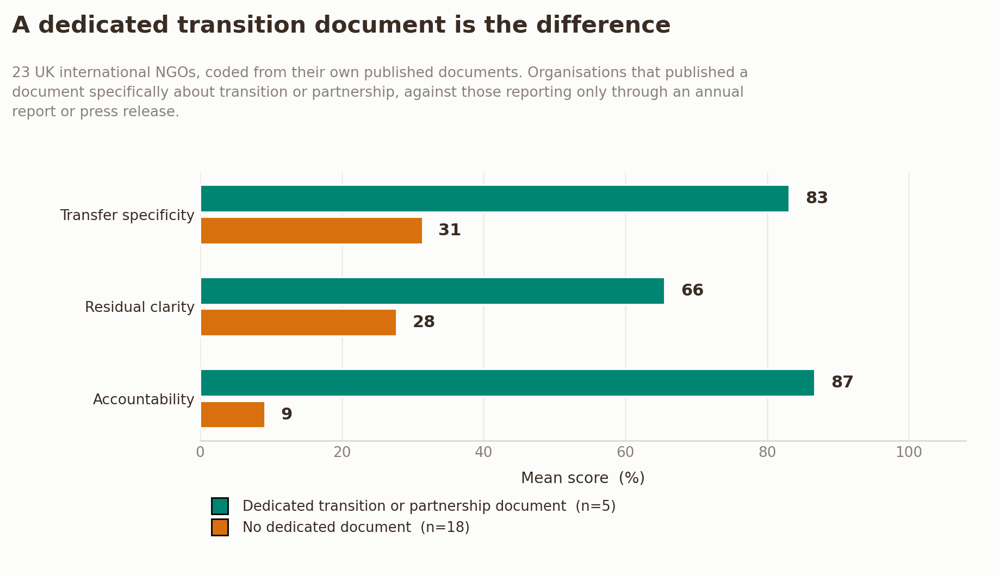

Fifteen Weeks · scrolled
Twenty-three UK international NGOs. Thirteen questions. Everything below is quoted from an organisation's own published document. Scroll to go through it.
15 September 2025 → 30 December 2025
Fifteen weeks between the two. One small assistive technology charity, thirty-five years old.
The sample
Average score, all 23
Fourteen points apart. Real, and too small to be the story.
put a figure against money moving to partners
give a handover timetable separate from their own redundancy timetable
state any measure of whether the transition worked
Figure 1

Organisations with a document written about the transition, against everyone else
Comparison group vs. reported group
Where the work goes, on paper
The only organisation that names where its work would go is the one whose centre of gravity already sits outside the UK.
Reliability check
The method failed its own test. Reported anyway.
Fifteen Weeks
23 organisations. 13 codes. Every score traced to a quotation. Published under CC BY 4.0.
01
Free reserves were fine. Staff numbers had grown. The board saw no reason to doubt the charity had a future.
Fifteen weeks later, on 30 December 2025, a general meeting on Microsoft Teams resolved to wind the company up. What survives publicly of thirty-five years of wheelchair design work is one sentence on a website and a filing history.
02
Fifteen entered because a restructuring, closure or transition had already been reported. Eight entered as a comparison group, chosen because nothing had been written about them.
Every code above zero required a quotation from the organisation's own document. Trade press was used only to find the paperwork, never to score it.
03
The expectation going in was that reductions get costed precisely and transfers get described vaguely. Across the sample the gap is real but modest, about fourteen points. Most organisations are thin on both.
04
Christian Aid reports forty-five per cent of charitable expenditure shared with partners, up from thirty-seven, with indirect cost recovery split fifty-fifty.
“Partners are currently not included in the policy, but we know that some National Organisations have started doing so when required from the donor.”
Plan International, Pledge for Change self-report
05
“We have taken a strategic and principled decision to progressively withdraw from UN-OCHA Country-Based Pooled Funds (CBPFs) starting in January 2026 and finishing by the end of 2027.”
Save the Children International
A start, an end, two years apart. Almost everywhere else in the sample, the only dates belong to the reduction.
06
Programme indicators are everywhere. A count of children reached says nothing about whether a handover held. Christian Aid is one of the few to commit to checking, by repeating its partner survey in two years.
07
Organisations with a standalone document about their transition score 83 on transfer specificity. Everyone else scores 31. Same sector, same pressures, different question being answered.
08
Five of the eight comparison organisations turned out to disclose a restructuring nobody had reported. On every measure, they document their handovers better than the organisations that made the news.
“Eleven country office transitions, with named successor entities and dated go-live points.”
HelpAge International, entered the study as a control
09
Save the Children International's seventeen per cent headcount reduction is narrated in the section on greenhouse gas emissions, because emissions intensity is calculated per employee. Tearfund discloses its £179,000 restructuring cost, down from £1,611,000 the year before, in a note about senior pay.
Neither rule was written with a transition in mind. The number surfaces anyway, as a side effect of an instrument built to answer something else.
10
“In the unlikely event of Amref UK no longer operating, any ongoing programmes would be transferred to Amref HQ. and Country Offices ensuring that Amref UK’s charitable objects continued to be met.”
Amref Health Africa UK, 2025 trustees' report
Amref UK is twenty staff in London, attached to an organisation headquartered in Nairobi. For Amref, a transfer to headquarters moves toward the centre of the organisation, not away from it.
11
Five organisations were coded twice. The two rounds agreed on 77 per cent of codes, against an 80 per cent threshold set in advance. Most of the disagreement traces to what could be read rather than to two people reading the same sentence differently: a scanned document, the wrong legal entity, a figure sitting in a note the first pass never reached.
The failed threshold is reported here rather than quietly adjusted, because adjusting it would be the kind of thing this study is about.
12
The full report has eleven more sections than this scroll does, a working codebook, and everyone in the sample's own row, checkable against their own words. The dataset is free to use.
Read the rest, or check it yourself
Every score above zero in this study is tied to a quotation from the organisation's own document, with a source and a section reference. The scroll above skips most of it.